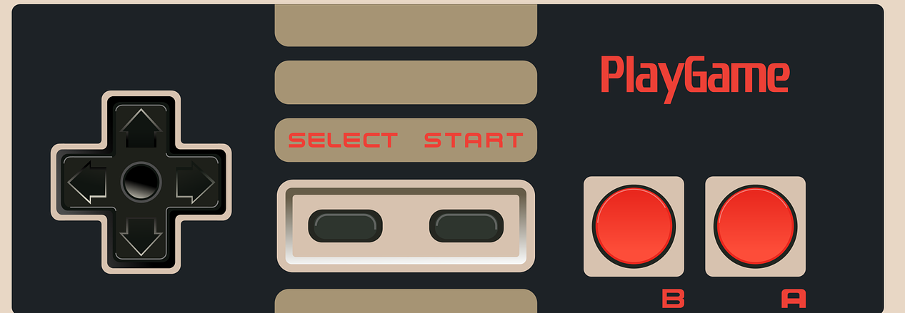

Music
I was given a guitar at a very young age. It was my father's way of making me play less video games(which didn't work). However, ever since I recieved my first guitar I have always been facinated by the art of music. I first started learning small chords for simple acoustic songs which led to me singing(quite horribly) at first but as I practiced more and grew older, I felt my self get better. I perfermoed few gigs with a couple of friends from school during my later teenage years where I sang and played the guitar.
Recenetly, my interest in this hobby has grown further. I have been taking singing lessons regularly and have managed to make a small studio setup in my room where i make, record and edit my own music using a Digital Audio Workstation.
My taste in music has a mixture of genres and music from all around the world. The genre I idolise the most however, is Old School Rock/Metal from the 60s/70s/80s/90s and Late 90s/Early 2000s Pop Punk. Due to the amazing talent in guitar playing, singing, performing and the artistic talent David Gilmour from the old progressive rock band Pink Floyd, I regard him as my idol.
Spirituality and Meditation
I come from a very spiritual background. Born in nepal, spirtuality was all around my during my younger age. Nepal being a very hindu and buddist country, values its spiritual way life deeply. My father and grandfather both being raised up in this eniverionment never failed to keep me in a spiritual path. Due to this, to this day I view the world in a spiritual way. Beleiving in a higher conciousness, energy of life and the universe and much more. I am very passionate about this topic so feel free to contact me about this(my email is on the right).
I am also very passionate about meditation. Seeing my father meditate from from a very young age, I was bound to pick up the habit. I use meditation as a way to relieve stress, gain insight and move forward from situations in life. It has played a big part of making me who I am and I am forever grateful that it was involved in my life.
Exercise and Sports
This has been the most life changing hobby of mine. Since a very young age I was quite overweight and for me personally, it was an obstacle that limited me in lot of my endeavours.
However, during my gap year trip to China, I discoverd my passion in hiking/trekking. This was a huge turning point for me as I lost around 30kg due to the new found interest. Ever since then, the idea of carrying some equipment and climbing a mountain has been a huge interest of mine. Being originally from Nepal, I am lucky to have had such amazing trekking spots in the country.(lick the "goals" page at the top for more)
Other than that, I am a fan of playing football. I also attend gym regulary and try to keep my self as fit as possible.
Gaming/Anime/Tv Shows
Like many aspiring software engineers, I have a massive interest in the world of gaming, technlogy, anime, TV shows. I classify myself as a "nerd" in these things. I have been gaming for as long as I can remember. Having recieved a SAGA genesis when I was young, I was instantly hooked. At a later age I managed to put together a gaming PC buy obtaining hardware online. This had always been a dream of mine (in the gaming side of things)
I regularly watch classic and new Anime. I have been doing so since very young when my brothers and sisters watched anime such as "Naruto" and "DBZ" and "One Piece". Similarly I like to spend some of my "free" time watching TV shows.
Contents